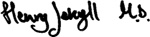

8
Listen to Part 1:

Đêm định mệnh
Vài ngày sau, Poole, người hầu của Tiến sĩ Jekyll, gõ cửa nhà Utterson rất mạnh. Poole rất sợ hãi.
‘Có chuyện gì thế?’ Utterson hỏi. ‘Tiến sĩ Jekyll có ốm không?’
‘Tôi không biết, thưa ông,’ Poole nói, ‘nhưng có gì đó không ổn.’
‘Hãy nói cho tôi biết chuyện gì đã xảy ra.’ Utterson nói.
‘Tiến sĩ Jekyll đã tự nhốt mình trong phòng thí nghiệm,’ Poole nói. ‘Ông ấy không nói và không mở cửa.’
‘Ông ấy có ngã không?’ Utterson hỏi. ‘Có lẽ ông ấy không tự mình mở cửa được.’
‘Tôi không nghĩ vậy, thưa ông,’ Poole nói. ‘Ông ấy đã viết giấy rồi đẩy ra ngoài cửa.’
‘Những tờ giấy đó viết gì?’
‘Tất cả đều viết giống nhau, thưa ông. Tất cả đều yêu cầu một loại hóa chất đặc biệt. Tôi đã đến mọi hiệu thuốc ở London. Mỗi khi tôi mang một ít hóa chất đó về, Tiến sĩ Jekyll lại nói nó không tốt. Ông ấy đã ba lần cho tôi đến hiệu thuốc của ông Maw với một tờ giấy. Lần cuối cùng tôi đến, ông Maw đã rất tức giận. Ông ta ném tờ giấy vào tôi và bảo tôi đừng đến nữa.’
Listen to Part 2:
‘Ông có tờ giấy đó không?’ Utterson hỏi.
‘Có, thưa ông, đây ạ,’ Poole nói.
Ông Maw
Ngày 13 tháng 2 năm 1886
Vài ngày trước, ông đã gửi cho tôi một ít hóa chất. Nhưng nó không hoạt động. Làm ơn, làm ơn hãy tìm cho tôi một ít hóa chất mà tôi mua của ông năm ngoái. Tôi cần nó gấp. Loại hóa chất mới này không tốt. Làm ơn, tôi cầu xin ông. Đừng từ chối giúp tôi.
 Henry Jekyll MD
‘Ông đã gặp Tiến sĩ Jekyll lần cuối cùng vào lúc nào?’ Utterson hỏi.
‘Tôi... Tôi không chắc nữa, thưa ông.’
‘Không chắc nữa sao! Khi nào ông ấy vào phòng thí nghiệm?’
‘Khoảng một tuần trước, thưa ông. Nhưng hôm nay, khi tôi trở về từ hiệu thuốc của ông Maw, thì cửa phòng thí nghiệm đã mở.’
Listen to Part 3:
‘Vậy là hôm nay ông đã gặp Tiến sĩ Jekyll à?’
‘Tôi thấy một người,’ Poole nói với giọng nhỏ. ‘Có người ở trong phòng chứa đồ cũ bên cạnh phòng thí nghiệm.’
‘Ai vậy?’ Utterson hỏi.
‘Quấn băng trắng quanh đầu, nên tôi không thấy mặt,’ Poole nói. ‘Nhưng tôi không nghĩ đó là Tiến sĩ Jekyll. Người đó nhỏ con. Người đó chạy vào phòng thí nghiệm ngay khi thấy tôi. Đó là lý do khiến tôi quyết định nói chuyện với ông, thưa ông Utterson.’
‘Tôi hiểu,’ Utterson nói. ‘Chúng ta phải đến nhà đó ngay. Tôi sẽ nói chuyện với Tiến sĩ Jekyll.’
Utterson mặc áo khoác và đi cùng Poole. Họ nhanh chóng đến nhà của Tiến sĩ Jekyll.
Tất cả những người hầu của Tiến sĩ Jekyll đều đứng ở hành lang. Họ rất sợ hãi. Một trong số những người hầu đang khóc.
‘Thưa ông Utterson, xin ông giúp chúng tôi,’ cô ta nhanh chóng nói. ‘Người đàn ông đó đã quát tháo gọi Poole. Ông ta muốn một loại hóa chất đặc biệt.’
‘Ai đã quát tháo vậy?’ Utterson hỏi.
‘Người đàn ông trong phòng thí nghiệm,’ người hầu gái nói.
Listen to Part 4:
‘Không phải Tiến sĩ Jekyll à?’
‘Giọng nói không giống ông ấy, thưa ông.’
‘Poole,’ Utterson nói, ‘có rìu trong nhà không? Chúng ta phải phá cửa phòng thí nghiệm.’
Poole lấy một chiếc rìu và đi theo Utterson. Utterson đi ra phía sau nhà. Ông lắng nghe cẩn thận ở cửa phòng thí nghiệm. Ông nghe thấy tiếng ai đó đang đi từ đầu này sang đầu kia bên trong phòng thí nghiệm. Ông nghe thấy giọng nói của một người đàn ông. Người đàn ông nói bằng giọng kỳ lạ.
‘Jekyll?’ Utterson hét. ‘Mở cửa này ra!’
‘Utterson!’ Một giọng nói vang lên từ phía bên kia cánh cửa. ‘Tôi xin ông hãy để tôi yên. Làm ơn, hãy để tôi một mình.’
‘Đó không phải giọng của Tiến sĩ Jekyll,’ Utterson kêu lên. ‘Đó là ngài Hyde! Phá cửa ra, Poole.’
Poole vung rìu vào cửa. Nhát rìu chặt vào gỗ. Một tiếng hét từ trong phòng thí nghiệm phát ra. Cánh cửa cũ kĩ đó rất chắc. Phải mất hơn một phút mới phá được nó. Phòng thí nghiệm chìm trong im lặng.
Utterson nhìn qua cánh cửa vỡ. Ông không thấy ai trong phòng. Có một ít bột trắng trên bàn. Utterson bước đến bàn và dừng lại.
Một thi thể nằm trên sàn sau bàn. Đó là thi thể một người đàn ông nhỏ con. Những bộ quần áo mà người đàn ông mặc rộng thùng thình. Người đàn ông đã chết. Trong tay ông ta có một lọ màu xanh lá cây. Nhãn trên lọ ghi ‘Thuốc độc’.
Listen to Part 5:
‘Đây là thi thể của ngài Edward Hyde,’ Utterson nói. ‘Ông ta đã tự tử bằng thuốc độc. Poole, đi gọi cảnh sát. Tôi nghĩ ngài Hyde cũng đã giết Tiến sĩ Jekyll.’
Poole đi gọi cảnh sát. Utterson nhìn quanh phòng thí nghiệm. Trên bàn làm việc của Tiến sĩ Jekyll có một phong bì ghi:Gửi ông John Gabriel Utterson từ Tiến sĩ Henry Jekyll.
Utterson nhặt phong bì lên. Chữ viết tay là của Tiến sĩ Jekyll. Nhưng bản thân Tiến sĩ Jekyll thì đang ở đâu?
Một thi thể nằm trên sàn sau bàn. Đó là thi thể một người đàn ông nhỏ con.